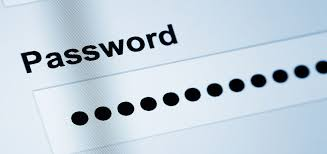

La protección con contraseña es una técnica de control de acceso que ayuda a mantener datos importantes protegidos de hackers garantizando que solo se puede acceder con las credenciales correctas.
Las contraseñas son un elemento esencial al poder navegar por internet ya que nos permite una seguridad entre nuestras cuentas de navegacion que usamos para entrar a diferentes sitios web. Son útiles para defenderte de ciberataques y reducir el riesgo de una vulneración de seguridad. Normalmente, son largas (12 caracteres como mínimo) e incluyen letras mayúsculas, letras minúsculas, números y caracteres especiales. Las contraseñas seguras no deben incluir información personal.
Una contraseña segura es la principal barrera que impide que te hackeen la mayoría de tus cuentas en línea. Exponerte al robo de identidad y a la extorsión es un riesgo que nunca debes correr. Tendrás que crear contraseñas que puedan combatir los métodos modernos de robo de contraseñas.
Un ejemplo de frase de contraseña podría ser, “vacA!quemaR#movEr?pianOh” (con las palabras vaca, quemar, mover y piano). Las frases de contraseña funcionan porque: Son fáciles de recordar. Engañan a los hackers que usan el diccionario o la fuerza bruta.
Con tantas contraseñas únicas que mantener, tendrás que tener cuidado con la forma en que las guardas. Para estar seguro, no hagas lo siguiente: escribir las contraseñas en un papel, guardar las contraseñas en la aplicación de notas de tu teléfono y no guardar automáticamente las contraseñas en tu navegador
Utiliza al menos de ocho a doce caracteres.
Las contraseñas no seguras a menudo contienen información personal o siguen patrones de teclado.
Utiliza una combinación de letras, números y símbolos
Las frases de contraseña pueden ser más seguras cuando se usan palabras inesperadas. Incluso si estás usando palabras comunes, puedes ordenarlas en un orden extraño y asegurarte de que no estén relacionadas.
Utiliza al menos una letra mayúscula
Las minúsculas, las mayúsculas, los símbolos y los números pueden formar parte de tu contraseña. La variedad puede aumentar lo impredecible que es tu contraseña.
Utiliza una contraseña diferente para cada una de tus cuentas
Reutilizar las contraseñas compromete varias cuentas. Haz que siempre sea original.
Utiliza palabras inusuales y poco comunes.
Un ejemplo podría ser una frase de contraseña de tres palabras de cuatro letras, en la que se sustituyen las dos primeras letras de cada palabra por números y símbolos. Esto podría ser: “?4ee#2ge?6ng” en lugar de “treecagesing” (árboljaulacantar)